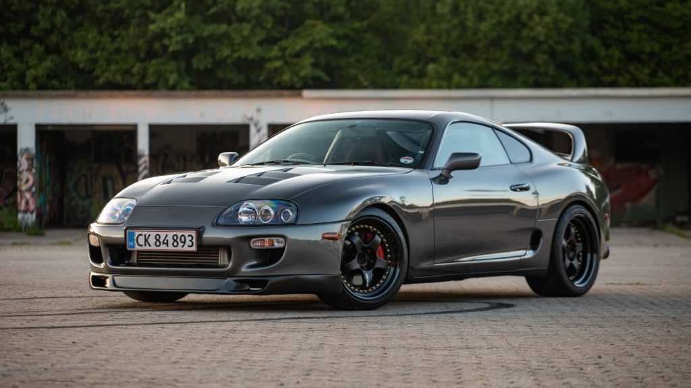
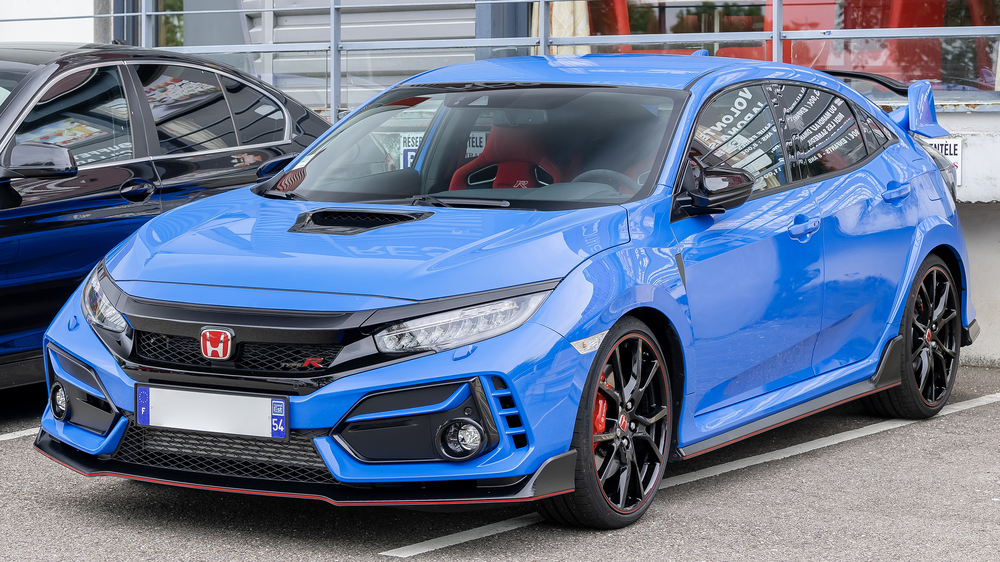

ABOUT ME
NAMA
NIM
KELAS
SUPRA
Toyota Supra adalah mobil sport berperforma tinggi yang diproduksi oleh Toyota Motor Corporation, Jepang dari tahun 1978 sampai 2002. Pada mulanya, Supra adalah versi mewah bermesin 6 silinder dari Toyota Celica. Mulai tahun 1986, Supra menjadi mobil sport tersendiri yang tidak ada hubungannya dengan Celica.
GTR R35
Nissan GT-R adalah sebuah mobil sport yang dibuat oleh Nissan, dikeluarkan di Jepang pada tanggal 6 Desember 2007, Amerika Serikat pada tanggal 7 Juli 2008, dan seluruh dunia pada bulan Maret 2009.[1][2][3] Mobil ini merupakan penerus dari jajaran Skyline GT-R.
CIVIC TYPE R
The first Civic Type R was the third model to receive Honda's Type R badge (after the NSX and Integra). Type R versions of the Civic typically feature a lightened and stiffened body, specially tuned engine, and upgraded brakes and chassis, and are offered only in five- or six-speed manual transmission. Like other Type R models, red is used in the background of the Honda badge to distinguish it from other models.
BRIO

Honda Brio adalah mobil berjenis hatchback subkompak 5 pintu yang diproduksi oleh Honda di Indonesia dan Thailand. Mobil ini diperkenalkan pada bulan Maret 2011. Nama Brio diambil dari bahasa Italia yang artinya ceria dan bersemangat.
BMW MK4
The BMW 4 Series is a range of compact executive cars manufactured by BMW since 2013. The 4 Series was created when BMW spun off the 2-door models (coupé and convertible) of the 3 Series into a separate series. The 4 Series is currently in its second generation.
PORSCHE 911
The Porsche 911 (pronounced Nine Eleven or in German: Neunelf) is a two-door 2+2 high performance rear-engined sports car introduced in September 1964 by Porsche AG of Stuttgart, Germany. It has a rear-mounted flat-six engine and originally a torsion bar suspension. The car has been continuously enhanced through the years but the basic concept has remained unchanged.[1] The engines were air-cooled until the introduction of the 996 series in 1998.